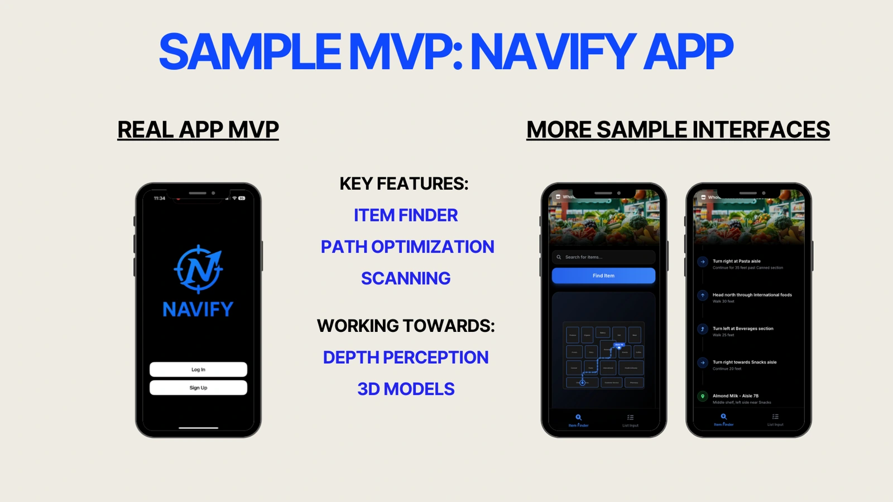
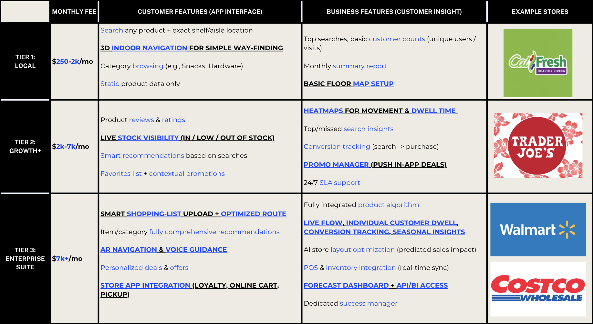

It Started in Kennedy Library
Cal Poly’s newly reopened Kennedy Library was big enough that knowing a room or book existed didn’t tell you how to get to it. Our first idea was an indoor navigation app for finding rooms, books, and study spaces. The useful part of that idea was the last stretch of a trip: someone had already reached the right building and still needed directions.
Our customer research pushed us toward large department and grocery stores. Shoppers described knowing exactly what they wanted and still walking the aisles looking for it. Employees were spending part of each shift giving the same directions. That gave us two people to design for: the shopper trying to finish a list and the retailer paying staff to keep the store running.
What Shoppers and Store Employees Told Us
One shopper described the gap in existing store apps: “they only tell you the aisle number, not the exact location.” A delivery shopper gave us a different reason to care. Searching for someone else’s groceries eats into the time available to complete an order. Both needed a more precise answer than a department name.
In our survey chart, the most common answer for time lost searching was 10–20 minutes, selected by 15 shoppers. Retail employees we spoke with estimated they fielded about 20 location questions per eight-hour shift. Those estimates helped us prioritize one interaction for the pitch: enter a product and get directions precise enough to finish the search.
The MVP: From an Item Name to a Shelf
I built the product demonstration around one item so the audience could judge the route from beginning to end. A shopper searches for almond milk. The floor map puts aisle 7B in context, with a route past recognizable departments. The directions translate that route into actions and end with the detail the shopper came for: middle shelf, left side near Snacks.

What We Prototyped
The pitch paired our app MVP with sample interfaces for an item finder, path optimization, and scanning. Showing the map beside the written directions let us explain the same journey to someone who prefers a visual overview and someone who wants one turn at a time.
What We Mocked Up Next
We also showed a 3D navigation concept to explore what guidance could look like from the shopper’s point of view. Depth perception and 3D models were development goals. A store pilot would first need to establish that the underlying map and product locations were accurate.
See the 3D concept on slide 12View the MVP slide from the pitch

Who Would Pay for the Map?
The shopper gets a shorter search. The retailer has a different reason to subscribe: understanding what customers try to find, which searches go unanswered, and where staff are repeatedly asked for help. We proposed three monthly tiers so a smaller store could start with a floor map, while a larger retailer could pay for deeper integration.
View the original pricing proposal

Six Calls and a Place to Test
We made six calls in one day looking for a store willing to let us develop Navify on its floor. The Trader Joe’s on South Higuera Street in San Luis Obispo said yes to in-store development. That was an opening for an unpaid pilot. Our proposed prices still needed to be tested with a buyer.
In the pitch, we proposed putting the entire $1,000 funding ask toward engineering. The next useful experiment was small: map a real store, give a shopper an item to find, and watch where the directions stopped being helpful. I’d measure time to the correct shelf and whether the shopper still needed an employee. I’d also ask the crew what it took to keep the map accurate when merchandise moved.
What I Learned About Leading a Product Team
The original setting can change while the problem stays useful. Giving up the library as our first market felt like a big change under a 72-hour deadline. The shopper interviews helped me see what was worth keeping: the distance between knowing something is in a building and being able to put your hand on it.
The person using a product and the person buying it need different evidence. For a shopper, the most persuasive part of our demo was the last shelf instruction. For a store, it was the possibility of fewer interruptions and a clearer picture of unsuccessful searches. Working on both the prototype and the business model taught me to explain each side in its own terms.